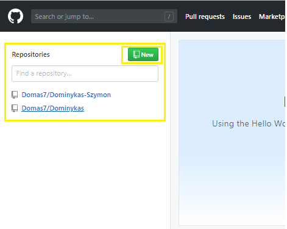

-Først og fremst må vi registrere oss innen github.com og det kan vi gjøre ved å trykke her

-Da får vi ei nettside som ser slikt ut. Får å lage bruker må fylle ut dei tabellene med "Username", "Email", og "Password" og trykke "Sign up for GitHub", altså det skal sjå slikt ut.Etter at vi har fylt ut dei tabellene og har trykt på "Sign up for GitHub" skal vi bekrefte e-posten vår. Det gjør vi ved å logge inn på e-posten vår eg trykke på bekreft knappen.

-Nå som vi endelig har laget GitHub bruker kan vi begynne å lage nettsiden vårt. Får å begynne på nettsiden må vi trykke på "New Repository" som ligger oppe på venstre hjørnet. 
Nå som vi har kommet så langt, skal vi sette navn på nettsiden vårt. På "Repository name" setter vi hvilken navn skal nettsiden ha. "Description" delen er ikkje obligatorisk, men hvis vi har lyst, kan vi sette hva Repository skal innehalde. Du kan selv velge om du vil ha nettsiden din privat eller åpen, men i dette tilfellet tar vi at alle can se denne "Repository". Siden det er første gang vi lager repository er det viktig å aktivere "Intialize this repository with a README". I tillegg kan vi bytte "gitignore" (der pilen viser) fra "None" til "Jekyll". Når vi har gjort det, kan vi endelig trykke på "Create Repository".
Nå som vi har kommet så langt skal vi bytte "Branches/Tags". Vi får det opprinelig i "Master" og skal bytte til "gh-pages". Så det vi gjer er å trykke på "Branch: master" og skrive inn "gh-pages" og trykke "ENTER". det skal forandre "Branch'en" fra master til "gh-pages".


Etter at vi har bytta fra "Master" til "gh-pages" kan vi gå inn på "Settings" som ligger oppe på høyre hjørnet. Der skal vi finne linken vårt til den nettsiden som vi publiserte.
Etter at me har gått inn i "Settings" blar vi nesten heilt ned og finner ein blå link. Det er linken til den nettsiden som vi publiserte.